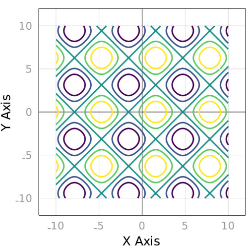
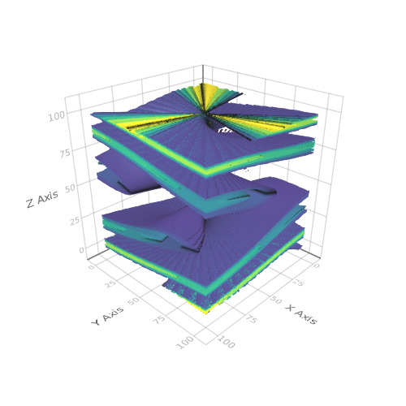

contour
Contour Function
Tags: 2d, contour.
using Makie
r = linspace(-10, 10, 512)
z = ((x, y)-> sin(x) + cos(y)).(r, r')
contour(r, r, z, levels = 5, color = :viridis, linewidth = 3)

contour
Tags: 2d, contour.
using Makie
y = linspace(-0.997669, 0.997669, 23)
contour(linspace(-0.99, 0.99, 23), y, rand(23, 23), levels = 10)

3D Contour with 2D contour slices
Tags: 3d, contour, heatmap, transformation, volume.
using Makie
function test(x, y, z)
xy = [x, y, z]
((xy') * eye(3, 3) * xy) / 20
end
x = linspace(-2pi, 2pi, 100)
scene = Scene()
c = contour!(scene, x, x, x, test, levels = 6, alpha = 0.3)[end]
xm, ym, zm = minimum(scene.limits[])
# c[4] == fourth argument of the above plotting command
contour!(scene, x, x, map(v-> v[1, :, :], c[4]), transformation = (:xy, zm), linewidth = 10)
heatmap!(scene, x, x, map(v-> v[:, 1, :], c[4]), transformation = (:xz, ym))
contour!(scene, x, x, map(v-> v[:, :, 1], c[4]), fillrange = true, transformation = (:yz, xm))

Surface + wireframe + contour
Tags: 3d, contour, surface, transformation, wireframe.
using Makie
N = 51
x = linspace(-2, 2, N)
y = x
z = (-x .* exp.(-x .^ 2 .- (y') .^ 2)) .* 4
scene = wireframe(x, y, z)
xm, ym, zm = minimum(scene.limits[])
scene = surface!(scene, x, y, z)
contour!(scene, x, y, z, levels = 15, linewidth = 2, transformation = (:xy, zm))
scene

Implicit equation
Tags: 2d, contour, implicit, implicits.
using Makie
r = linspace(-5, 5, 400)
(a, b) = -1, 2
z = ((x,y) -> y.^4 - x.^4 + a .* y.^2 + b .* x.^2).(r, r')
z2 = z .* (abs.(z) .< 250)
contour(r, r, z2)

Cube lattice
Tags: 3d, colormap, contour, implicit, implicits.
using Makie
r = linspace(-3, 3, 100)
me = [((1 ./ x).^2 + (1 ./ y).^2 + (1 ./ z).^2) for x=r, y=r, z=r]
me2 = me .* (abs.(me) .> 1.5)
contour(me2, color = :Set2)

Twisty cube thing
Tags: 3d, colormap, colorrange, contour, implicit, implicits.
using Makie
(a, b) = -1, 2
r = linspace(-2, 2, 100)
z = ((x,y) -> x + y).(r, r') ./ 5
me = [z .* sin.(3 .* (atan.(y ./ x) .+ z.^2 .+ pi .* (x .> 0))) for x=r, y=r, z=r]
me2 = me .* (me .> z .* 0.25)
contour(me2, levels = 6, colormap = :Spectral)

Spacecraft from a galaxy far, far away
Tags: 3d, colormap, colorrange, contour, implicit, implicits, inequalities, surface.
using Makie
N = 100
r = linspace(-1, 1, N)
# bunch of equations and inequalities
f1(x,y,z) = x.^2 .+ y.^2 .+ z.^2 #center sphere
f2(x,y,z) = y.^2 .+ z.^2 #command deck cylinder thing
f3(x,y,z) = x.^2 .+ 4 .* y.^2 #controls the flattened cylinder connecting center pod to wings
f4(x,y,z) = (y .* 0.7 .+ 0.05) #defines the diagonal spokes
f5(x,y,z) = (y .* 0.7 .- 0.05) #defines the diagonal spokes
f6(x,y,z) = abs.(x) + 0.3 .* abs.(y) #frame part of the wings
e1(x,y,z) = 0.12 .* (1 .- abs.(z)) #limits of a hexagonal tube in the inside of the craft
e2(x,y,z) = abs.(z) .* (abs.(z) .< 0.95) #outer limits of the wing plane
e3(x,y,z) = abs.(z) .* (abs.(z) .> 0.9) #inner limits of the wing plane
e4(x,y,z) = (abs.(x) + abs.(0.3 .*y)) .* ((abs.(x) + abs.(0.3 .* y)) .< 1) #frame of the wings
e5(x,y,z) = abs.(z) .* (abs.(z) .< 1.05) #outside thickness of wing frames, including the spokes
e6(x,y,z) = abs.(z) .* (abs.(z) .> 0.80) #inside thickness of wing frames, including the spokes
e7(x,y,z) = abs.(x) .* (abs.(x) .< 0.7) #length of the straight bars part of frames
e8(x,y,z) = abs.(y) .* (abs.(y) .> 0.9) #width of the straight bars part of frames
e9(x,y,z) = abs.(y) .* (abs.(y) .< 0.035) #the thickness of the horizontal reinforcing bar on the wing planes
amp = 15 #this just amplifies the "strength" of a volume, so that it shows up more clearly in the plot
# spawn the tie fighter
me = [(f1(x,y,z) .* f1(x,y,z).<0.2) .+ ((f2(x,y,z) .* f2(x,y,z).<0.02).*((x.<0.68).*(x.>0.50))) .+ amp .* (f3(x,y,z) .* (f3(x,y,z) .< e1(x,y,z))) .+ (e2(x,y,z).*e3(x,y,z).*e4(x,y,z)) .+ (e5(x,y,z).*e6(x,y,z)).*((e7(x,y,z)).*(e8(x,y,z)) .+ e9(x,y,z) .+ ((x.>f5(x,y,z)).*x).*((x.<f4(x,y,z)).*x) .+ ((-x.>f5(x,y,z)).*x).*((-x.<f4(x,y,z)).*x) .+ ((f6(x,y,z).*(f6(x,y,z).<1.05)).*(f6(x,y,z).*(f6(x,y,z).>0.95)))) for x=r, y=r, z=r]
me2 = me
for i = 1:length(r)
me2[:,:,i] = me2[:,:,i] - min(me2[:,:,i]...)
me2[:,:,i] = me2[:,:,i] ./ max(me2[:,:,i]...)
end
volume(me2, algorithm = :mip, colormap = :Purples, colorrange = (0,0.6))